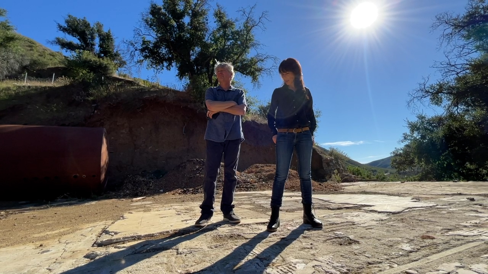
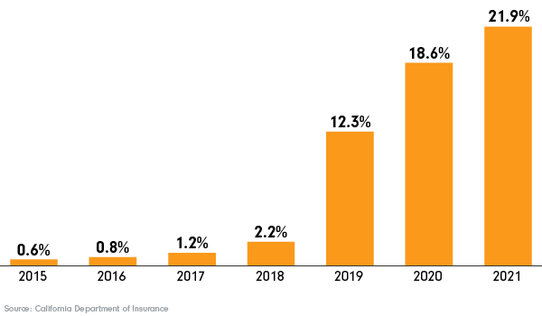
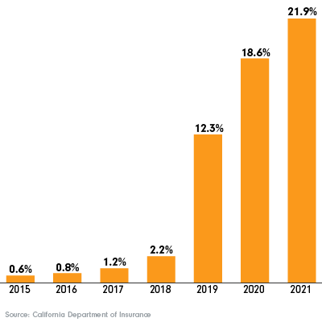

Diane Moss has learned a lot of lessons from the 97,000-acre Woolsey Fire that damaged more than 300 structures, destroyed another 1,600, and left three dead in the Santa Monica Mountains in 2018.
One of those lessons: Have a scanner radio so she and her family can hear what emergency responders are saying.
"If we had had that information, we would have known that they were already thinking: This is going to take all of Malibu," Moss remembered as she spoke with KABC near the rubble and dirt where her home once stood in the unincorporated area of Malibu in Los Angeles County.
"All of us here in this canyon underestimated what was coming," she continued.
Five years later, Moss said she and her husband Matthias still haven't been able to rebuild their home due to permitting challenges. For now, they live in a tiny house on their property.
And though they're in good spirits, Moss said losing most of their belongings in the fire was a "shock."

Diane Moss and her husband, Matthias, stand on what used to be their home in unincorporated Malibu, Calif. It burned in the Woolsey Fire in 2018. Photo credit: Anabel Muñoz, KABC
"It's not the kind of thing I would wish on anybody, my worst enemy," she said. "So many people were never going to be able to come back. And so many people who want to rebuild still can't, because the permitting process is so cumbersome, or they've got insurance issues."
Even through the struggles, Moss continues to find more lessons.
"Nature is incredibly resilient; it's been our best teacher," Moss said. "Even the fire has been a phenomenal teacher on how to do things more intelligently and how to live with it."
Learning to live with fire will be important in the future.
The fire has been a phenomenal teacher on how to do things more intelligently and how to live with it.
Diane Moss - Malibu resident
One out of every seven properties in the U.S. will be at a major risk for wildfires in the next 30 years, according to data from climate risk nonprofit First Street Foundation. That's a total of about 21 million properties.
And with wildfires increasing across the country, so is the number of homes built in high fire risk areas.
Dr. Kimiko Barrett, a wildfire researcher, said climate change is causing wildfires to increase "with respect to severity, frequency, size, magnitude."
A study published in 2020 found that "high severity" wildfires (fires that destroyed more than 95% of trees) increased by a factor of eight between 1985 and 2017.
"They're becoming, essentially, these nuclear events. They are getting much bigger in size relative to the nineteenth century," said Barrett, policy analyst at Headwaters Economics, a nonpartisan independent research organization based in Montana.
[Wildfires are] becoming essentially these nuclear events. They are getting much bigger in size relative to the nineteenth century.
Dr. Kimiko Barrett - Policy analyst & wildfire researcher, Headwaters Economics
At the same time, more people are living in high-risk areas.
The Wildland Urban Interface, otherwise known as WUI (pronounced "WOO-ee"), is the land that meets or intermingles with wildland. It's land that currently has some of the highest wildfire threat to people and homes.
It was also the fastest-growing land use type from 1990 to 2010, and it has continued to grow in 2020.
Currently, about one out of every three homes in the contiguous U.S. are in WUI areas. Between 1990 and 2020, 14 million more homes were built in WUI areas, a 47% increase.
More homes are being built in the Wildland Urban Interface
WUI is an area "where human development meets or intermingles with wildland," according to FEMA, and can be at high risk for wildfire. Currently, about one out of every three homes in the contiguous U.S. are in the WUI and the areas are growing. Between 1990 and 2020, 14 million more homes were built in WUI areas, a 47% increase.
In Nevada, the number of homes in these areas has tripled. In Texas, they've nearly doubled. In North Carolina, there's been a 65% increase.
In California, a state that has historically always had wildfire risk, the number of homes in these areas has grown 40% since 1990.
Experts say there are a number of reasons why areas at high risk for wildfires are growing.
First, they are "beautiful places to live," Barrett said. "There's lots of opportunity to hike, to fish, to do the things that many of us love here, particularly in the American West."

The hills in Malibu, Calif. where Diane Moss lives. Photo credit: Grace Manthey
It can also be cheaper to develop in these areas, especially as housing prices increase.
But beyond housing prices and beauty, Barrett pointed out that some may live in high fire risk areas "simply out of necessity."
"These are homes that they've inherited, that they've lived in for quite a while," Barrett said. "They're multigenerational at that point. Or alternatively, there's simply no other place to move into."
Another rising trend: insurance costs and dropped customers. Especially in California.
The insurance market in all areas, not just the WUI, "is as unhealthy as it's ever been, certainly in my 32-year career here in California," according to Amy Bach, co-founder and executive director for United Policyholders, a nonprofit insurance consumer advocacy group.
Statewide, almost a quarter of a million policies were not renewed by insurers in 2021, according to data from the California Department of Insurance.
Multiple insurance companies paused new policies within the state this year, citing high costs.
[The insurance market] is as unhealthy as it's ever been, certainly in my 32-year career here in California.
Amy Bach - Co-founder and executive director, United Policyholders
Barrett, from Headwaters Economics, said a lot of the issues insurance companies are facing have to do with more recent damages.
"We are seeing that wildfire is starting to make a very significant impact on insurance companies and the damages that they're accruing," said Barrett.
The 2017 and 2018 record-breaking wildfire seasons upended the insurance industry in California. In November 2018 alone – one of the most destructive wildfire months in the state's history – insurer losses were over $12 billion from the more than 46,000 claims filed.
As a last resort, the state offers an insurer-run basic fire insurance plan called the FAIR Plan, which is mostly funded by the premiums it collects from customers.
However, the FAIR plan has been scrutinized by experts, including in a 2022 hearing where California Insurance Commissioner Ricardo Lara said the plan is "not meeting its mission."
"The product is very bare bones. It doesn't even cover what a normal home insurance policy covers," Bach said.
In the 10 counties with the highest exposure to fire risk, the percentage of FAIR policies out of the total number are increasing drastically. In 2015, 0.6% of total plans were FAIR policies. In 2021, which is the most recent data available, almost 22% were FAIR plans.
The percent of FAIR plans jumped in high fire risk counties
In the top 10 counties with the highest exposure to fire risk, FAIR plans increased drastically in just a few years.


California isn't the only state with a volatile insurance market. Colorado is facing similar issues and passed legislation to create its own FAIR plan earlier this year.
Bach listed several other states as well, including Oregon and Washington, that are seeing insurance companies impacted by the rate of wildfires in recent years. Hurricanes in Florida and Louisiana have also created similar insurance issues to California.
"When I talk to insurance regulators from around the country, most of them will tell you that their markets are not as competitive as they had been, that there are not as many options and the prices have gone up," Bach said.
There are several ways to slow, or mitigate, these rising trends. Understanding how wildfires threaten homes can help in evaluating which solutions might be best for each family.
"People have this picture of wildfire - you think of the wall of flame that goes through the forest, and all the creatures are running," said Dr. Anne Cope, the Chief Engineer at the Insurance Institute for Business & Home Safety.
Cope works with her team at IBHS, an independent nonprofit supported by insurers, studying how to make buildings more climate resilient in cost effective ways.
Cope said while this "wall of flame" happens in the wildland, the biggest threat to communities are the wind-born embers that create spot fires in landscaping, wooden fences or roofs, "completely different than the wildland fire."
Then, it's the spot fires that grow.
Suppressing fires too much can make wildfires worse, because they are a necessary part of ecological processes. The more we suppress them, the more fuel we build up.
"You are punting that risk down the road for a greater long term damage and risk in the future. That is what they call the Wildfire Paradox." explained Barrett from Headwaters Economics.
She also said our society tends to believe we can control the natural force of wildfires.
"And nature will win in that battle, ultimately," Barrett said.
So, prescribed burns can be helpful, as long as they aren't threatening homes.
"It is much more challenging when you bring people and communities into this equation," said Barrett.
People have this picture of wildfire - you think of the wall of flame that goes through the forest, and all the creatures are running.
Dr. Anne Cope - Chief engineer, Insurance Institute for Business & Home Safety
There are multiple ways to lower fire risk to homes, some simpler than others. One solution some experts point to is disincentivizing building in high-risk areas, though they acknowledge this might not be realistic for many communities.
For those that stay or move to high-risk areas, experts say they should build with non-combustible materials. But simple things, like not having vegetation within a five-foot barrier of your home or replacing vents so embers can't get through, can also have a huge impact.
But experts say many communities need more funding and education on mitigation efforts for them to work.
"Honestly, it's not fair to say that a working mother with three children has to build a house to a certain standard if she's not given a subsidy or some sort of financial support in order to achieve that mitigation measure," said Barrett.
She said right now, these types of actions will likely come from a local level.
California Governor's Office of Emergency Services and the California Department of Forestry and Fire Protection (CalFire) developed a state home hardening initiative to retrofit homes at high risk to wildfires called the California Wildfire Mitigation Program.
In its pilot phase, the program focuses on "high social vulnerability" areas in four counties, which are communities with residents in poverty, with a disability, have residents over 65 or under 5 years old, have language barriers or do not have a car.
"This is a significant step forward in demonstrating the level of investment needed to meet mitigation standards, and they are the only state doing anything like this," said Barrett.
CalFire also gives out millions of dollars in Wildfire Protection Grants every year to local communities and organizations.
Building back in a more resilient way after a large fire is crucial, but can also be more challenging, said Jennifer Gray Thompson, CEO of After the Fire USA, a nonprofit working around the country to help people rebuild after wildfires.
"The biggest hurdle for any community has to do with whether or not they were wealthy before, and if they have capacity," Thompson said. "If they were not, then the chances of them actually rebuilding back in a very in a swift way, or in a way that's more climate resilient, is dramatically reduced."
Residents in California communities like Sonoma County can often rebuild easier, Thompson said, simply because they have a larger population and more money. But a community like Paradise, California is much smaller with less money and has taken longer to rebuild.
"We need to encourage governments to come up with innovative approaches, whether they're tax abatements or refunds. But the first order business is building awareness," Dominic Sims, the chief executive at the International Code Council, a building safety advocacy organization.
The biggest hurdle for any community has to do with whether or not they were wealthy before, and if they have capacity.
Jennifer Gray Thompson - CEO, After the Fire USA
Building awareness is what Jennifer Gray Thompson's organization is trying to do through lived experiences, especially for those navigating rebuilding after a fire.
"We can actually help them by introducing them to people who have actually navigated it before, not as a prescription, but as an adaptive model of what they can do, so that not everybody is reinventing the wheel," Thompson said.
For Diane Moss, as she tries to rebuild her Malibu home, she hopes to help others through experiences.
"It's a huge opportunity to learn, and to share lessons learned with others, who are going to be going through or currently going through similar challenges. And at the heart of it, this is home," Moss said.